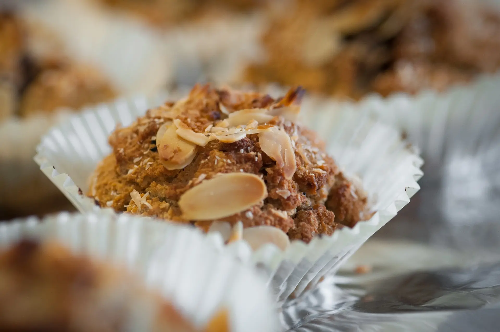

Kochtipps
Wie ernähre ich mich gesund?
Hi, mein Name ist Laura. Ich helfe euch gesünder zu kochen. Hier sind ein paar tipps von mir.
- Vielfalt: Essen Sie eine breite Palette an Lebensmitteln, um eine ausgewogene Ernährung sicherzustellen.
- Frisches Obst und Gemüse: Fügen Sie Ihrer Ernährung reichlich frisches Obst und Gemüse hinzu.
- Vollkornprodukte: Wählen Sie Vollkornbrot, -nudeln und -reis für eine bessere Ballaststoffzufuhr.
- Mageres Protein: Entscheiden Sie sich für magere Proteinquellen wie Hühnchen, Fisch, Bohnen und Tofu.
- Reduzieren Sie gesättigte Fette: Begrenzen Sie den Verzehr von fettreichen Lebensmitteln wie Butter und frittierten Speisen.
- Gute Fette: Integrieren Sie gesunde Fette wie Avocados, Nüsse und Olivenöl in Ihre Ernährung.
- Wasser trinken: Bleiben Sie hydratisiert, indem Sie ausreichend Wasser trinken und Limonaden oder gesüßte Getränke vermeiden.
- Zucker reduzieren: Minimieren Sie den Konsum von zugesetztem Zucker in Lebensmitteln und Getränken.
- Salz reduzieren: Verringern Sie die Salzaufnahme, indem Sie weniger verarbeitete Lebensmittel essen.
- Mahlzeitenplanung: Planen Sie Ihre Mahlzeiten im Voraus, um gesunde Optionen zu gewährleisten.
Tipps & Tricks der Community
Verwende ein Schneidebrett mit einem feuchten Papiertuch darunter,
um ein Verrutschen während des Schneidens zu verhindern.
Um zu verhindern, dass dir beim Zwiebelschneiden die Tränen
kommen, lege die Zwiebel für etwa 10 Minuten in den
Gefrierschrank, bevor du sie schneidest.
Verwende einen Eisportionierer, um gleichmäßig geformte Kekse oder
Cupcake-Teigportionen zu erhalten.
Wenn du schnell hartgekochte Eier benötigst, koche sie in einem
Wasserkocher anstatt auf dem Herd. Das spart Zeit und Energie.
Muffin der Woche

- 2 reife Bananen
- 2 Eier
- 120 ml ungesüßtes Mandelmilch
- 60 ml Ahornsirup oder Honig
- 1 Teelöffel Vanilleextrakt
- 120 g Hafermehl
- 80 g Mandelmehl
- 2 Teelöffel Backpulver
- 1/2 Teelöffel Zimt
- 1/4 Teelöffel Salz
- 100 g Blaubeeren